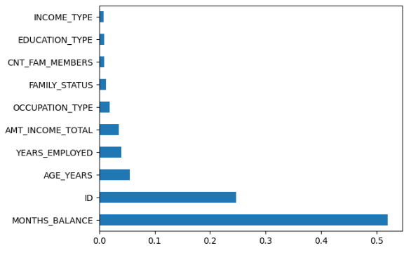

Credit Card Application Analysis
Credit card providers must balance between approving more people and avoiding financial losses. If they are too lenient, they risk giving credit to those who might not repay. If they’re too strict, they lose good customers. Our project helps strike that balance by using data and patterns from past applications to predict outcomes for new ones.
Overview
This project focuses on helping credit card companies make better and faster decisions about who should be approved for a credit card. Every day, these companies receive thousands of applications and need a way to decide who is likely to repay the money they borrow. We used real application data to build a system that can predict whether an applicant is eligible for a credit card.
Dataset
We used a public dataset that included details like income, employment, age, education, housing, and family status of past applicants. We also looked at whether those people eventually managed to repay or not. This helped us train our system to learn from real-life cases.
Key Steps
In this project, we analyzed a large credit card application dataset to predict applicant eligibility using machine learning. The data was sourced from Kaggle and consisted of two separate tables containing applicant information and credit records. After merging the datasets using a common client ID, we curated a refined dataset with over 500,000 records and key features such as income, employment history, age, education, housing type, and previous credit behavior. We performed extensive data cleaning—removing duplicates, handling missing values (e.g., dropping entries with unknown occupation), and transforming raw values like days into readable units (e.g., years). Feature engineering was applied to derive new variables, such as employment status, and categorical data was encoded for model compatibility. We normalized numeric fields to ensure consistent scaling. For exploratory analysis, we used visual tools like histograms, box plots, and correlation heatmaps to identify important trends and relationships. Feature importance analysis using models like Random Forest revealed which attributes most strongly influenced approval outcomes—highlighting ‘MONTHS_BALANCE’ and employment duration as significant factors.
Insights
We found that some factors, like how long a person has been employed and their recent credit history, were strong indicators of whether they would repay their credit. Features like monthly balance played a big role in decision-making. We also saw that the data was not evenly spread, meaning some groups were under- or over-represented.
